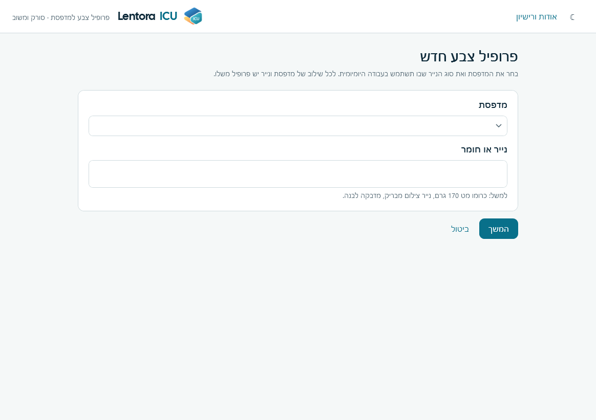
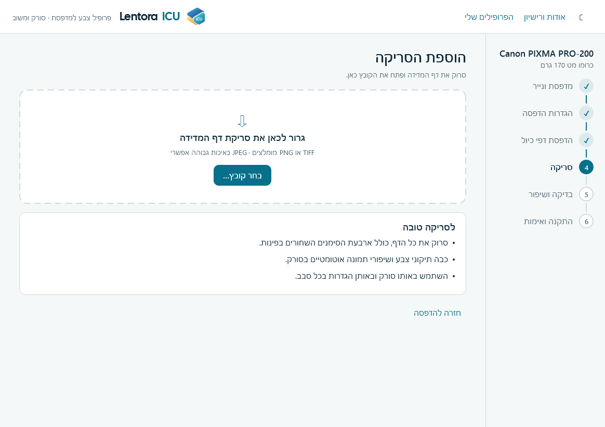
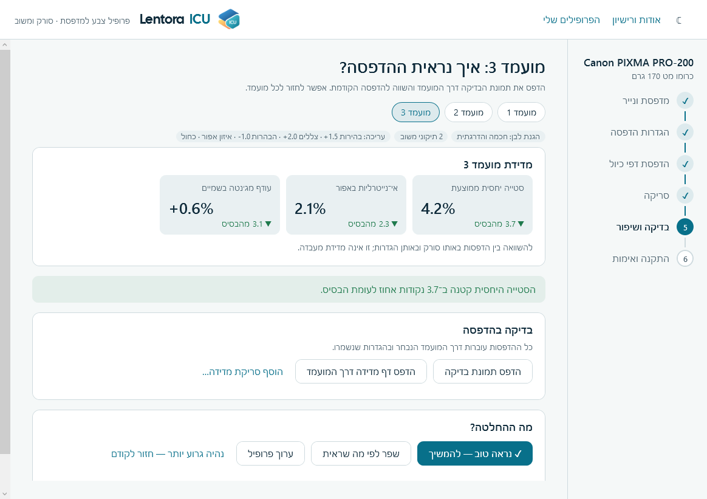
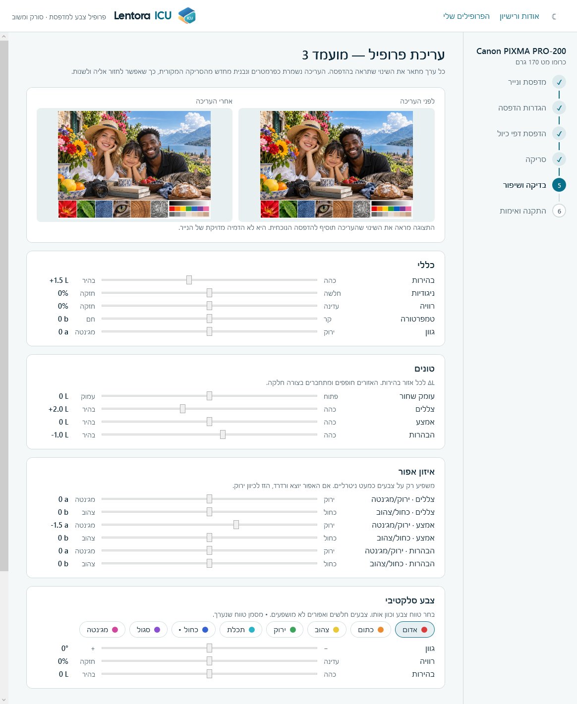

Lentora ICU יוצר פרופיל ICC למדפסת: קובץ שמסביר ל־Windows ולתוכנות גרפיקה איך המדפסת שלך מציגה צבעים על נייר מסוים, כדי שהצבעים יודפסו קרוב יותר למה שרואים על המסך. במקום מכשיר מדידה, הכלי משתמש בדף שהודפס ונסרק בסורק משרדי רגיל, ובשיפוט שלך מול הדפסות.
רוב איכות הפרופיל נקבעת לפני שפותחים את התוכנה. שלושה כללים מרכזיים: עקביות, ניטרליות, וסבלנות.
התוכנה מובילה אתכם בשישה שלבים. פס ההתקדמות בצד ימין מראה היכן אתם נמצאים. כל שיפור נשמר כגרסה נפרדת של הפרופיל. בחלק מהמסכים הגרסה נקראת גם "מועמד", והכוונה לאותו דבר.


אם סורקים דף מדידה שהודפס דרך גרסה מסוימת ("הדפס דף מדידה דרך המועמד" ואז "הוסף סריקת מדידה"), מתקבלים שלושה מדדים להשוואה מול דף הבסיס:
| מדד | מה הוא אומר |
|---|---|
| סטייה יחסית ממוצעת | כמה הצבעים המודפסים רחוקים מהמקור בממוצע, באחוזים. ירידה היא סימן לשיפור. |
| אי־נייטרליות באפור | כמה גוון צבע יש באפורים. נמוך עדיף. חלק מהערך יכול לבוא מהסורק עצמו. |
| עודף מג׳נטה בשמיים | האם גווני תכלת וכחול נוטים לורוד או סגול. קרוב לאפס עדיף. |
המספרים מתאימים להשוואה בין הדפסות באותו סורק ובאותן הגדרות. אין להתייחס אליהם כדיוק מעבדה, ועין מנוסה מול הדפסה היא עדיין השופט האחרון.
| דרך | מתי להשתמש |
|---|---|
| "שפר לפי מה שראית" (משוב) | כשאתם יודעים לומר מה לא בסדר במילים: "כהה מדי", "עור צהוב מדי", "שמיים ורודים". בוחרים את הבעיה, קובעים עוצמה מ־1 (עדין) עד 4 (חזק) ובונים גרסה חדשה. אפשר לבחור כמה בעיות יחד. התיקונים מצטברים על הגרסה הנוכחית. |
| "ערוך פרופיל" (עורך) | כשרוצים שליטה מדויקת בערכים. פרק 5 מסביר את כל המחוונים. |

כדי לערוך פרופיל שכבר יצרתם: במסך הבית לחצו "ערוך פרופיל" על כרטיס הפרופיל. העורך נפתח עם הערכים השמורים בגרסה האחרונה. כדי להתחיל מגרסה אחרת, בחרו אותה בשורה "ערוך על בסיס". אחרי השינויים לחצו "שמור כגרסה מעודכנת": נבנית גרסה חדשה מהסריקה המקורית, והגרסאות הקודמות נשארות.
כל מחוון מתאר את השינוי שתראו בהדפסה: הזזה ל"בהיר" תבהיר את ההדפסה, והזזה ל"צהוב" תוסיף צהוב. מרכז המחוון הוא "ללא שינוי", ולחיצה כפולה על מחוון מאפסת אותו. התצוגה בראש המסך מראה "לפני" ו"אחרי" על תמונת הבדיקה. היא נועדה לתת כיוון ולא להדמות את הנייר במדויק.
| מחוון | טווח | משמעות |
|---|---|---|
| בהירות | ±8 L | הבהרה או הכהיה של כל התמונה. יחידה אחת של L היא שינוי קטן אך מורגש. |
| ניגודיות | ±25% | הרחקת הצללים וההבהרות זה מזה (חיובי), או קירובם (שלילי). |
| רוויה | ±30% | עוצמת הצבעים. חיובי מחזק צבעים, שלילי מחליש. |
| טמפרטורה | ±8 b | קר (כחול) ↔ חם (צהוב) בכל התמונה. |
| גוון | ±8 a | ירוק ↔ מג׳נטה בכל התמונה. |
ארבעה אזורי בהירות שחופפים ומתחברים חלק, כך שלא נוצרות קפיצות. שינוי באזור אחד כמעט לא משפיע על האחרים.
| מחוון | טווח | משמעות |
|---|---|---|
| עומק שחור | ±8 L | השחורים העמוקים ביותר. כלפי "עמוק" השחור כהה יותר; כלפי "פתוח" נפתחים פרטים בשחורים סתומים. |
| צללים | ±8 L | האזורים הכהים. הבהרה מחזירה פרטים בצללים. |
| אמצע | ±8 L | הגוונים הבינוניים: עור, עשב, שמיים. משפיע הכי הרבה על "תחושת הבהירות" של התמונה. |
| הבהרות | ±8 L | האזורים הבהירים. הכהיה מחזירה פרטים בעננים או בבגדים לבנים. לבן הנייר עצמו מוגן. |
מתקן גוון צבע באפורים בכל אזור בהירות בנפרד. משפיע רק על צבעים כמעט ניטרליים, ולא על צבעים רוויים. זה הכלי לתיקון אפור שיוצא ורדרד, ירקרק או צהבהב.
| מחוון | טווח | משמעות |
|---|---|---|
| ירוק / מג׳נטה (a) | ±6 | אפור ורדרד: הזיזו לכיוון ירוק. אפור ירקרק: הזיזו לכיוון מג׳נטה. |
| כחול / צהוב (b) | ±6 | אפור צהבהב: הזיזו לכיוון כחול. אפור כחלחל: הזיזו לכיוון צהוב. |
יש זוג מחוונים לכל אחד משלושת האזורים (צללים, אמצע, הבהרות). אפשר לראות שהאפור בהיר מתיישר אך הכהה לא, ולתקן כל אזור לפי הצורך.
כוונון של טווח צבע אחד בלי לגעת בשאר. בוחרים אחד משמונה טווחים (אדום, כתום, צהוב, ירוק, תכלת, כחול, סגול, מג׳נטה), ומכווננים שלושה ערכים. טווח שנערך מסומן בנקודה. צבעים חלשים ואפורים אינם מושפעים.
| מחוון | טווח | משמעות |
|---|---|---|
| גוון | ±20° | סיבוב הצבע לכיוון הטווח השכן. למשל, כחול שנוטה לסגול: סובבו מעט לכיוון תכלת. |
| רוויה | ±40% | חיזוק או החלשה של הטווח הזה בלבד. |
| בהירות | ±8 L | הבהרה או הכהיה של הטווח הזה בלבד. |
תיקונים ליד הלבן עלולים לצבוע את לבן הנייר, וזה מורגש מיד. ההגנה מקטינה את כל התיקונים ככל שהצבע קרוב ללבן, והיא חלה גם על המשוב וגם על העורך.
| מצב | משמעות |
|---|---|
| חכמה והדרגתית (מומלץ) | ההגנה מתחזקת בהדרגה ככל שמתקרבים ללבן. צבעים בהירים ורוויים, כמו צהוב או תכלת בהיר, ממשיכים לקבל תיקון. |
| לבן מוחלט בלבד | רק לבן מלא (255) נשאר ללא נגיעה. מתאים כשרוצים תיקון חזק גם בגוונים קרובים ללבן. |
| מורחבת | טווח הגנה רחב יותר, בעוצמה שקובעים (עדינה עד חזקה). מתאים כשהגוונים הבהירים והנייר נצבעים מדי. |

טבלה זו היא נקודת פתיחה. בצעו צעד קטן, בנו גרסה, ובדקו בהדפסה.
| מה רואים בהדפסה | מה לעשות |
|---|---|
| הכול כהה מדי או בהיר מדי | משוב: "כהה מדי" או "בהיר מדי" בעוצמה 1–2. בעורך: בהירות או אמצע ב־±1 עד ±2. |
| שחורים סתומים ללא פרטים | משוב: "שחור סתום", או בעורך "עומק שחור" לכיוון "פתוח". |
| הבהרות שרופות בעננים או בבגדים | משוב: "לבנים שרופים" או "פרטים נעלמים באזורים בהירים". בעורך: הבהרות לכיוון כהה. |
| אפור עם גוון | משוב: "אפורים לא ניטרליים". לגוון שנשאר: בעורך, איזון אפור באזור שבו רואים אותו, בצעדים של 1. |
| עור צהוב, אדום או ורדרד | משוב: הפריט המתאים בקבוצת "גווני עור" (פועל רק על דגימות העור שבדף, ללא השפעה על שאר התמונה). |
| שמיים ורדרדים או סגלגלים | משוב: "שמיים ורודים / סגולים מדי". בעורך: צבע סלקטיבי, "כחול" או "תכלת", והזיזו את הגוון קצת. |
| צבע אחד חזק או חלש מדי (אדומים, כחולים, ירוקים, צהובים) | משוב: הפריט המתאים בקבוצת "צבעים", או רוויה בצבע סלקטיבי. |
| הכול "דהוי" או "צעקני" | בעורך: רוויה בכללי, ב־5% עד 10% בכל פעם. |
| פסים או מעברים לא חלקים | משוב: "מעברים לא חלקים" או "פסים (banding)". אם זה לא עוזר, הבעיה אולי בדרייבר או בנייר ולא בפרופיל. |
| לבן הנייר נצבע | העלו את הגנת לבן הנייר ל"מורחבת", או הקטינו את התיקון שגרם לכך. |
כל גרסה נבנית מחדש מסריקת הכיול המקורית יחד עם התיקונים. לכן אפשר לחזור לכל גרסה, לבחור אותה כבסיס ולהמשיך ממנה. התיקונים לא "נערמים" על קובץ ICC שכבר תוקן, ולכן השגיאות לא מצטברות.
| הודעה או תופעה | פתרון |
|---|---|
| "לא נמצאו ארבע פינות דף הכיול" | סרקו שוב את כל העמוד, כולל ארבעת הריבועים השחורים בפינות. ודאו שהדף לא חתוך ולא מוסתר. |
| "הלבן של הנייר כהה מדי בסריקה" | כבו שיפורי תמונה אוטומטיים בסורק, ונסו שוב. בדקו שהנייר לבן ושהמכסה סגור. |
| "הסריקה אינה עקבית מספיק" | הדף מוטה, מקומט או שהודפס עם פסים. ישרו, הדפיסו מחדש ובדקו נחירים. ודאו שהסריקה אחידה. |
| "מנוע בניית הפרופילים לא נמצא" | התיקייה Argyll_V3.5.0 חייבת להישאר לצד התוכנה. הותקנה בצורה תקינה? הריצו את ההתקנה שוב. |
| ההתקנה ב־Windows נכשלה | נדרשת הרשאת מנהל. אשרו את חלון ההרשאה. במחשב מנוהל ייתכן שצריך את מנהל המערכת. |
| הבדיקה הסופית שונה ממה שאישרתי | הדרייבר כנראה מתקן צבע בעצמו. כבו ניהול צבע או שיפור תמונה בהגדרות המדפסת, והדפיסו שוב. |
| לא הצלחתי להתקרב לתוצאה טובה | פרופיל סורק לא יכול לפצות על נייר שלא מתאים להגדרות, נחירים סתומים או תאורה גרועה בבדיקה. נסו נייר או הגדרת איכות אחרת, ובנו פרופיל מחדש. |
התוכנה מסופקת כפי שהיא, ללא אחריות. התוצאה תלויה בסורק, במדפסת, בנייר, בדרייבר ובתאורה. אם נדרש דיוק מקצועי, מדדו עם מכשיר מדידה או פנו לאיש מקצוע בתחום הצבע וההדפסה.